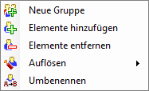
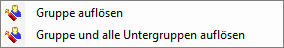
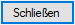

")
.png "Gruppe")

|

·Die Elemente der markierten Gruppe werden im Vorschaubereich des Dialogs und in der Zeichnung angezeigt. Alle Elemente, die nicht zur markierten Gruppe gehören, werden auf der Zeichnung in der Farbe für "Elemente im Hintergrund" dargestellt. [Option | SysDat | Farbeinstellung | Konstruktionsprogramm → Elemente im Hintergrund].
·Elemente auf ausgeblendeten Folien werden in der Vorschau nicht angezeigt.
Gruppenfunktionen
|
Erzeugt eine neue Gruppe. |
|
Fügt Zeichenelemente über Rahmen oder Anklicken in der Zeichnung der markierten Gruppe hinzu. |
|
Entfernt Zeichenelemente über Rahmen oder Anklicken in der Zeichnung aus der markierten Gruppe. |
|
Löst Gruppen optional mit allen Untergruppen auf. |
|
Benennt die Gruppe um. |
|
Entfernt alle Gruppen, die keine Elemente enthalten. |


Korrekturfunktionen
Mit den Korrekturfunktionen können Sie einzelne Schritte zurücksetzen und Aktionen wiederherstellen. Wenn Sie mit dem Cursor über einer der Schaltflächen verharren, wird ein Tooltip mit der Aktion angezeigt, die korrigiert bzw. wiederhergestellt wird.
|
Zurück: Setzt schrittweise die vorher abgeschlossenen Aktionen zurück. Die Schaltfläche [Zurück] wird erst angezeigt, wenn Sie eine Änderung vorgenommen haben. |
Wiederherstellen: Stellt schrittweise die letzten Korrekturaktionen wieder her. Die Schaltfläche [Wiederherstellen] wird erst angezeigt, wenn Sie eine Aktion rückgängig gemacht haben. |

Beachten Sie: Mit der Schaltfläche [Schließen] oder mit einem Klick auf [X] bestätigen Sie alle Änderungen. Eine anschließende Korrektur der vorgenommenen Änderungen ist nach dem Schließen des Gruppenmanagers nicht mehr möglich.
Kontextmenü
Mit einem Rechtsklick auf eine markierte Gruppe können Sie alle verfügbaren Funktionen über das Kontextmenü abrufen.


Zur Auswahl zoomen
 Die markierte Gruppe wird auf der Zeichenoberfläche herangezoomt. Wenn Sie den Haken entfernen, wird der vorherige Bildausschnitt angezeigt.
Die markierte Gruppe wird auf der Zeichenoberfläche herangezoomt. Wenn Sie den Haken entfernen, wird der vorherige Bildausschnitt angezeigt.
Vorschau
Zeigt die Elemente der aktuell markierten Gruppe an. Die Gruppe kann entweder direkt in der Baumstruktur markiert werden oder durch Anklicken eines Gruppenelements in der Zeichnung.
Beschreibung
Eingabe und Anzeige eines ergänzenden Textes zur aktuell markierten Gruppe.
·Um die Beschreibung zu bearbeiten, klicken Sie in das Eingabefeld und geben Sie den Text ein. Sie können auch einen Text über die Zwischenablage (Strg + C / Strg + V) aus einem anderen Dokument hineinkopieren.
·Um eine neue Zeile einzufügen, verwenden Sie die Tastenkombination Strg + Eingabetaste.
·Um die Beschreibung zu ergänzen, setzen Sie den Cursor per Mausklick oder mit den Pfeiltasten an die entsprechende Textstelle und geben Sie den neuen Text ein.
·Um eine Beschreibung zu ändern, markieren Sie durch das Ziehen der Maus die Textstelle und geben Sie einen neuen Text ein.
·Um den Text oder eine Textstelle zu löschen, markieren Sie den Text und drücken Sie die Löschtaste auf der Tastatur.
Wechseln Sie anschließend die Gruppe, damit der Text übernommen wird, oder bestätigen Sie mit der Eingabetaste (der Dialog wird geschlossen).

Übernimmt die Änderungen und schließt den Dialog. Wurde die Option Zur Auswahl zoomen aktiviert, wird wieder der ursprüngliche Bildausschnitt angezeigt.
Zugehörige Aufgaben: